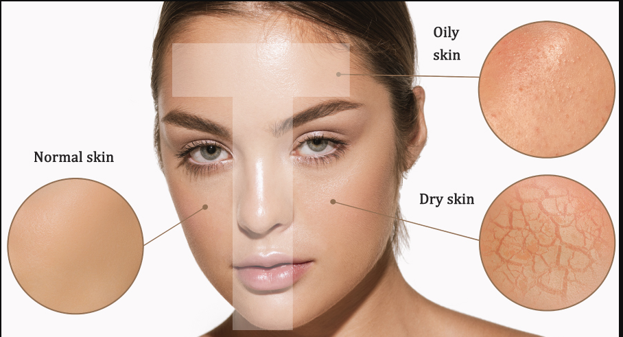

Understanding Your Skin Type
Knowing your skin type is the first step to achieving glowing skin. Skin types generally fall into these categories:
- Normal Skin: Balanced skin with minimal blemishes and a smooth texture.
- Dry Skin: Lacks moisture, feels tight, and may have flaky patches.
- Oily Skin: Excess sebum production leading to shine and clogged pores.
- Combination Skin: A mix of oily and dry areas, typically an oily T-zone with drier cheeks.
- Sensitive Skin: Prone to irritation and redness due to external factors or products.